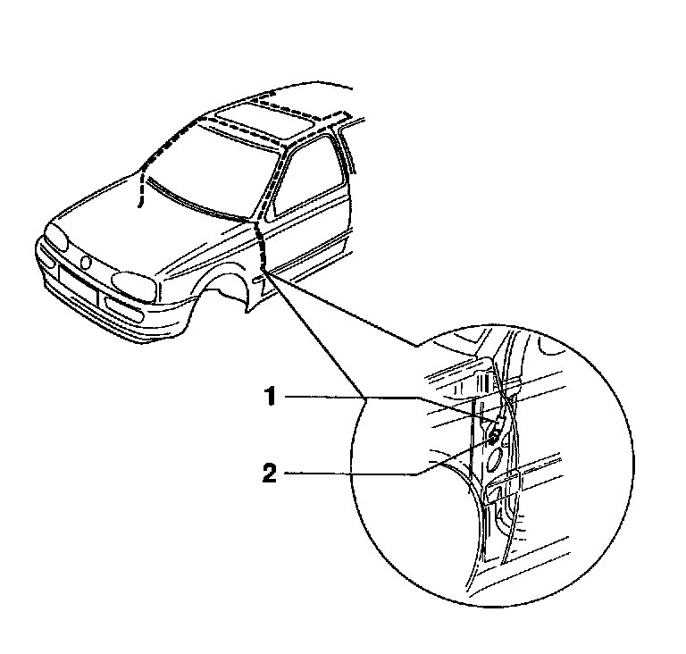
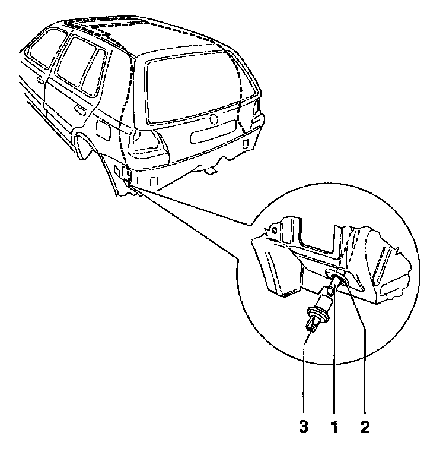

Cleaning Drain Hoses
Front Water Drain Hoses

1 - Front water drain hoses.
2 - Water drain valve.
The front water drain hoses 1 are routed through the A-pillars and terminate between door and A- pillar. Cleaning is done from the sunroof panel opening.
Note: For cleaning, a locally manufactured tool made from a speedometer inner cable, approx. 2300 mm (7.5 ft.) long is recommended.
Rear Water Drain Hoses

1 - Rear water drain hose
2 - Grommet for water drain hose
3 - Water drain valve (USA only)
The rear water drain hoses 2 are routed in the C- pillars and terminate at the side behind the bumper cover. Cleaning is done from the lower end of the hose. To do this, the bumper must be removed.
Note: For cleaning, a locally manufactured tool made from a speedometer inner cable, approx. 2300 mm (7.5 ft) long is recommended.